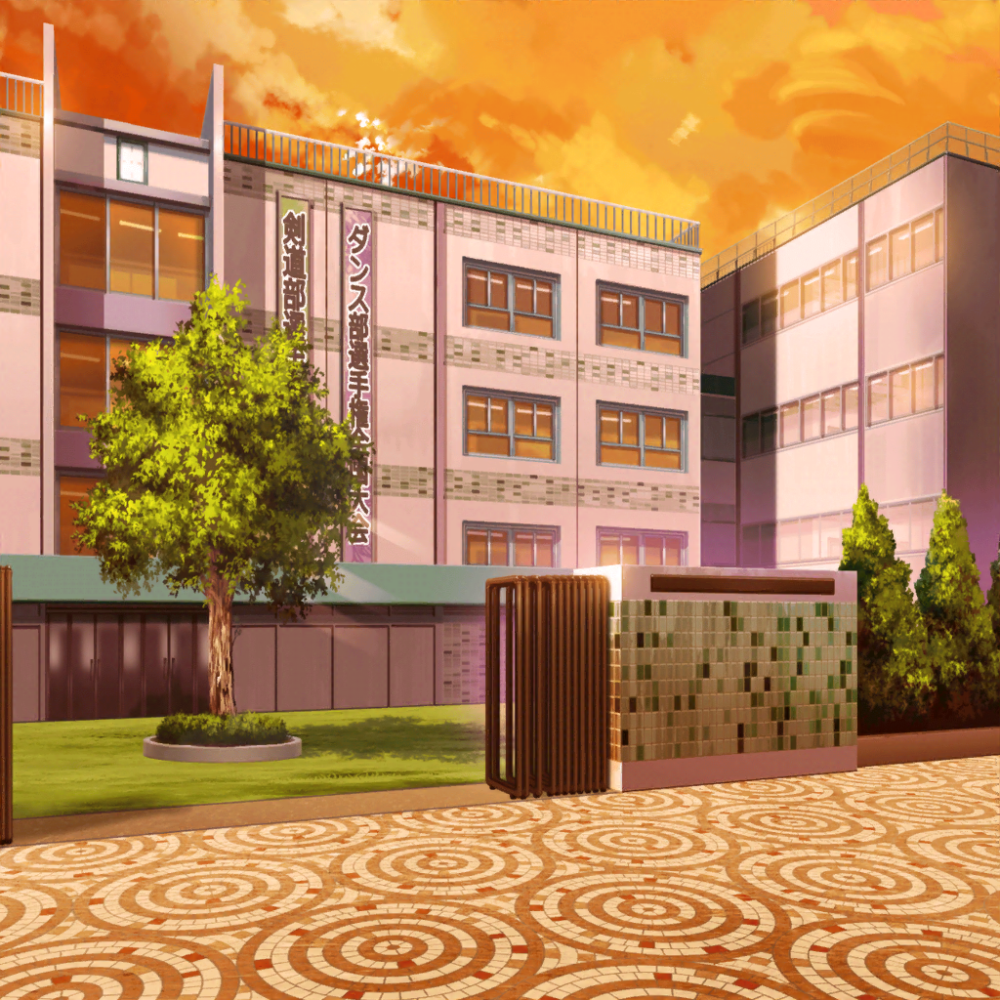

翌日
通学路
はぐみ
みーくん！
おはよ〜！
美咲
あぁ、はぐみ、おはよう
はぐみ
ライブのことだけどさ、はぐみも何か手伝えることないかな？
いっつもみーくんが会場の連絡とかしてくれるし……
美咲
うん、ありがと。
ライブする場所は今探してるから大丈夫。
あとミッシェルも、ライブ、頑張るって言ってた
はぐみ
ほんと？ 良かった〜！
じゃあ、みんなに聞いて、練習の日、決めないといけないね！
美咲
うん、そうだね。
はぐみ、ソフトボールの練習は？ 何曜日だっけ？
はぐみ
えっとね、はぐみ、今週と来週はソフトボールお休みするよ！
大会も終わったばっかりだし、ライブまでハロハピに集中！
はぐみ
だからね、はぐみもみーくんの力になりたい！
今日はスタジオで練習だけど、
明日からもいっぱい練習入れないといけないよね！
美咲
ありがとう、はぐみ。
じゃあ、今日スタジオに行ったらさ、
明日からの予定聞いて、予約しよっか
はぐみ
うん！
他には何かないかな？
メラメラ〜！ ってしてるみーくん見たら、何かやりたくて！
美咲
あはは、メラメラ〜！ ってしてた？ あたし
はぐみ
うん、してた！ だからね、はぐみすっごく嬉しいの！
みーくんはその……ちょっと遠くにいること、多いから
美咲
そ、そう……かな？

放課後
花咲川女子学園 校門前
こころ
さて！ みんな揃ったわね！
練習に行きましょ〜！
はぐみ・花音
おー！
美咲
（うんうん、みんな気合が入ってて何より）
美咲のクラスメイト
あれ、奥沢さん。
弦巻さん達と、何か用事……？
松原先輩も……なんか珍しい組み合わせだね
美咲
あ……えっと……
こころ
何か不思議かしら？ だって美咲は……
美咲
ぐ、偶然その辺で会って！ あはは〜
こころ
……？
はぐみ
……
美咲
（あたし……何やってんだろ……）
花音
美咲ちゃん……

スタジオ
こころ
ここは、ふんふんふーん♪
……がいいわ！
薫
あぁ、こころ……
君のアイディアはいつも私を刺激する……
薫
では、思い切って、ふーんふん、ふふーん♪はどうだろう？
美咲
だから、それじゃわかんないっての！
花音
あはは……
はぐみ
……
花音
はぐみちゃん、どうかした？
はぐみ
あのね、今朝ね、みーくんと一緒に学校に来たんだけどね……
花音
そっか……美咲ちゃんの態度が
ハロハピのみんなでいる時と、他の人がいる時とで違う……か……
はぐみ
うん……だからね、はぐみ、
みーくんがハロハピのこと、
好きなのかどうかわかんなくなっちゃって……
はぐみ
もやもや〜！ ってしちゃって……
花音
あのね、はぐみちゃん。
たぶん……だけど、美咲ちゃん、何か変わり始めてるんだと思う
花音
変わるのって、すっごく大変なことじゃないかな？
花音
だから、美咲ちゃん自身も、その変化に戸惑ってるんだと思う
はぐみ
変わる……？
確かに、みーくんいつもよりメラメラ〜！ ってしてたけど……
はぐみ
うーん……難しいよ〜……
花音
その……例えば、はぐみちゃんはソフトボールで、
新しい練習方法を取り入れることってない？
はぐみ
うん、あるよ！
この前も、新しい守備のフォーメーションを試したんだけど
みんないつもと違う守備位置に戸惑ってて……
はぐみ
慣れるまですごく大変で、
練習、みんな疲れてたなぁ……
はぐみ
……って、あ！
花音
うん。
きっと、美咲ちゃんも同じなんじゃないかな？
変わるために頑張ってて、うまくいかなくて、悩んでる
はぐみ
そっか、そういうことか！
ありがとー、かのちゃん先輩！
花音
それはきっといい変化だから、
私達も美咲ちゃんの役に立てたらいいね
はぐみ
うん、そうする！
こころ
はぐみ、あなたも一緒にアイディアを出して！
もっともーっと、いろんな意見が欲しいの！
美咲
か、花音さーん……
あたしだけじゃ、
この二人のインスピレーションをまとめられない……
はぐみ・花音
うん、今行くー！